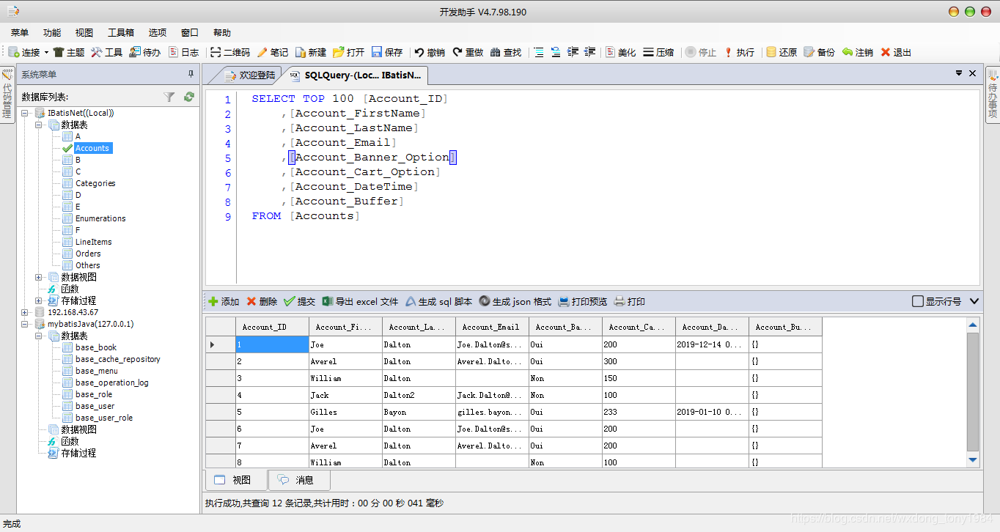

原文连接:https://www.cnblogs.com/wxdongtt2007/p/11391800.html
本人.net 程序猿一枚，平常最大的爱好就是coding ，尤其是对c#情有独衷，数年前，因为某个同事的一句话“大公司都有自己的代码框架，甚至是代码工具”，因为当时在一个小公司就职，而我也只是一个小小的团队带头人，心里就莫名有了一个想法，做一款代码工具，一款很有自我特色，从公司项目开发，到项目维护的代码助手，紧密贴合公司的开发框架和业务，甚至都想打上公司的LOGO,走哪里就让人看到这是我们公司自己的工具（当时我们经常会出差，去现场开发）。之前也用过叫做动软代码生成器的工具，因此动软代码生成器就成了我的标杆。从最初的实体类代码生成到后面主流数据库管理客户端，再到各种插件及插件框架，就做到了目前开发助手V4.8.X 。
目前做成了这个样子： 
从14年到现在经历了4，5个年前，每当有空闲时间就会拿起项目coding ，一个人构思设计（前期有动软代码生成器，SQL 2005 作参考,后面用过 pl\sql ,pgadmin,Navicat Forsql ,NavicatForPostgreSql 也做了些功能借签），一个人编码，一个人测试，修复BUG及优化和完善，坚持到现在，为此牺牲掉很多周末时光，熬过很多个夜晚，感触最深的是编写工具的时间多，真正用在工作中的时间少。为了N年前的一句话，一个冲动的想法，为了一个新功能完成后的那份喜悦，为了心中某个情怀，对C#,对winform,自定义用户控件，对GDI绘图的喜爱，一路疲惫，却一路坚持。
汇报一下开发助手目前的状况：
这是一款面向开发人员的辅助助手，它集数据库管理（目前支持sqlserver,sqlite,mysql,postgresql），代码生成（支持从数据库生成实体映射类，数据库操作DAL中间层），数据库文档生成，代码收藏夹（支持C#,SQL,Javascrip,Html,XML,Python语法高亮)，富文本编辑，个人记事及待办事项提醒，插件管理等功能。目前已开发到V4.8.X 版本，后期准备扩展：数据库关系图，执行计划，文本编辑器扩展多行同步编辑的功能。
项目中主要用到了.net 4.5框架下的winform,ado.net,自定义控件，T4模板，GDI绘图等技术,站在巨人肩上看得更高更远,借助开源，拥抱开源，这里也列出助手中用到的开源框架及技术：
1.ICSharpCode.TextEditor 一个强大的代码编辑器控件来自开源项目SharpDevelop,支持c#,java,html,javascript等语法高亮，折叠，智能提示
2.WeifenLuo.WinFormsUI.Docking Winform程序开发中布局控件，可以实现类似于Visual Studio的窗口停靠、拖拽等功能
3.Poor Man's T-SQL Formatter 一个SQL格式化的开源项目 地址：https://github.com/TaoK/PoorMansTSqlFormatter
4.JSBeautify javascript 代码格式化开源项目 地址：https://github.com/praveenvijayan/js-beautify
5.NPOI 一款execel ,word 操作神器是POI 的.net 实现 地址：https://github.com/tonyqus/npoi
6.NVelocity 模板引擎 地址：http://nvelocity.sourceforge.net/
除此还从很多地方借鉴了不少的代码，具体出处记不清楚了也不再列出，一并表示感谢。开源是一种精神，也是一种学习的途径。完善开发助手的同时，通过开源也使我的技术水平得到提升，作为回报，开发助手已于2016年在码云上发布源码，欢迎大家下截和点赞。
之前本人很懒，认为代码就是最好的文档，也担心自己文笔不好，理解不深，所以一直以来没有写过相关的文章介绍。如今想想，谁都有一个相关的过程，就像学技术一样，逐渐学习，步步提高，重要的是学习东西总要有点总结，为自己也为更有有共同爱好的人，所以打算后期陆陆续续写一些关于我的开发助手相关的文章。
今晚暂写于此吧，最后差点忘了，贴一下开发助手的项目地址：https://gitee.com/sqlorm/DevelopAssistant